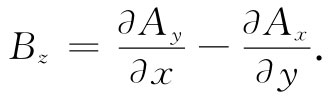
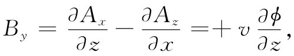
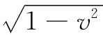
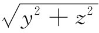
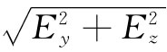
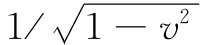
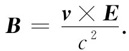

现在已有了由匀速运动的点电荷产生的势，我们——为了实用原因——该求其场。有许多情况其中带电粒子是以匀速运动的——例如，穿过云室的宇宙线，或甚至在一根导线里缓慢运动的电子。因此，至少让我们知道，对于任何速率——甚至对于接近光速的速率，只要假定其中没有加速度——场实际上看来像什么样子，这是一个有意义的问题。
通过常用法则便可由势得到场：
但Az 等于零，所以我们就对式（26.1）中的ϕ取微商，得
要求得x分量需多做一些工作。ϕ的微商此时较为复杂而且Ax 又不等于零。首先，
过一会儿我们将要来看看E的物理意义，此刻让我们先来求出B。对于其z分量，

由于Ay 为零，就只需得到一个微商。然而，要注意Ax 正好是vϕ，而vϕ的∂/∂y则恰恰是-vEy 。因此
Bz =vEy . （26.7）
同理， 
也即 By =-vEz . （26.8）
最后，Bx 为零，因为Ay 和Az 两者都是零。因而可以将磁场简单地写成
B=v×E. （26.9）
现在来看看场像个什么样子。我们试图把电荷在其现在位置周围各不同位置上的场描绘出来。电场的影响，在某种意义上确实来自推迟位置，但由于运动是严格规定的，所以推迟位置便可以由现在位置唯一地给出。对于匀速运动来说，更妙的是把场同现行位置联系起来，因为在点（x，y，z）处各场分量都仅取决于（x-vt），y和z——从现在位置到达点（x，y，z）的位移rP 的各分量（见图26-3）。
图26-3 一个以匀速运动着的电荷，其电场从电荷的“现”位置径向地指出
首先考虑z=0的点。那么E就只有x和y分量。根据式（26.3）和（26.6），这两分量的比恰好等于位移的x分量和y分量的比，这意味着，E和rP 指向相同方向 ，如图26-3所示。由于Ez 也正比于z，所以这个结果在三维中适用就是明显的了。总之，电场是从电荷沿径向发出的，正如一个静止电荷的场那样。当然，这个场并非完全与静止电荷的场相同，那全是由于附加因子（1-v2 ）所致。但是我们还可以证明一件相当有趣的事情。要是你用一个特殊的坐标系——其中x轴被压缩了一个因子 ——来画出库仑场，则你正好会得到这个差别。如果你这样做，则场线就将在该电荷前后散开，而在侧向周围将被压缩在一起，如图26-4所示。
图26-4 一个以匀速v=0.9c运动的电荷的电场［图（b）］，与一静止电荷的电场［图（a）］比较
如果将E的强度同场线密度按照惯常的办法互相联系起来，则可以看到，在侧向的场较强，而前后的场较弱，恰如那些方程所指出的。首先，若在垂直于运动路线的方向上观察场强，也就是说，在（x-vt）=0的地方，从电荷至场点的距离为 ，则这里总场强就是 ，即
场与距离的平方成反比——很像库仑场，所不同的是被一个恒大于1的恒定附加因子 所增强。因此，在运动电荷的侧向 ，电场比从库仑定律所得到的要强。实际上，侧向场比库仑场增大的倍数刚好等于该粒子的能量与其静质量的比。
在电荷的前面（与后面），y和z都是零，因而
场又与离开电荷距离的平方成反比，但现在却被减弱 了一个因子（1-v2 ），这与场线的图景相符。如果v/c是一个小量，则v2 /c2 更小，因而（1-v2 ）这一因子的影响就很小，我们便回到库仑定律上来。但如果粒子的运动速度十分接近于光速，则在前后方向上的场将会大大削弱，而在侧向的场将大大增强。
关于运动电荷电场的上述结果可以这样来表示：假定你把一个静止电荷的场线描绘在一张纸上，然后使这幅图画以速率v行进。当然，此时整幅图画会受到洛伦兹收缩，也就是说，在纸面上的那些碳粒会出现在不同地方。令人惊异的是，当该页纸在你旁边飞过时，你所看到的图画仍然代表该点电荷的场线。这一收缩会把那些场线在侧向上互相挤紧，而在前后方向则彼此散开，刚好按照适当方式给出正确的线密度。我们曾强调过，场线是不真实的，只不过是一种表示场的方式。然而，这里场线却几乎像是真实的了。在这种特殊情况下，如果你错误地认为场线是由于某种原因真实地存在于空间里的，并对之作了变换，你就获得了正确的场。然而，这也丝毫不会使场线更加真实。你必须提醒你自己场线并不是真实的，你所应该做的事情就是去考虑由电荷和磁铁一起产生的电场。当磁铁运动时，新的电场被产生，从而破坏了美丽图景。因此，这一收缩图像的巧妙构思并非普遍有效。然而，对于记住来自一个快速运动电荷的场像什么样子，它是一种方便手段。
图26-5 在一运动电荷附近的磁场为v×E（试与图26-4比较）
磁场就是v×E［根据式（26.9）］。如果你把速度矢量叉乘一个径向的E场，你便会得到一个环绕着运动路线的B，如图26-5所示。如果把那些c都放回去，则你将看到，它与过去处理低速电荷时所得的结果相同。为了看清应该在哪里放进c，一个好办法是回过去参考力的定律：
F=q（E+v×B）.
你看到速度乘上磁场才具有与电场相同的量纲。因此，式（26.9）的右边就应该有一个因子1/c2 ：
 （26.12）
对于一个低速运动电荷（v≪c）来说，我们可取库仑场作为E，这时
上式完全相当于曾在§14-7中得到的关于电流的磁场方程式。
我们愿意顺便指出某一种你会感兴趣而加以思考的东西（以后还将会回来再次进行讨论）。试想象两质子具有互成直角的速度，使得其中一个将横穿过另一个的路径，但却在其前面，从而彼此不会发生碰撞。在某一时刻，它们的相对位置将如图26-6（a）所示。现在试考察由q2 作用于q1 上的力以及相反情况。作用于q2 上的只有来自q1 的电力，因为q1 在沿其运动路线上不会造成磁场。然而，作用于q1 上的除了那个电力外，却还有磁力，因为q1 正在q2 所造成的B场中运动。这些力如图26-6（b）所示。作用于q1 与q2 上的电力彼此大小相等方向相反。然而，却有一侧向（磁）力作用于q1 上，而没有侧向力作用于 q2 上。是否作用不等于反作用呢？我们想把这一问题留给你们去思索。
图26-6 两个运动电荷之间的作用力并不总是相等而相反。看来“作用”不等于“反作用”